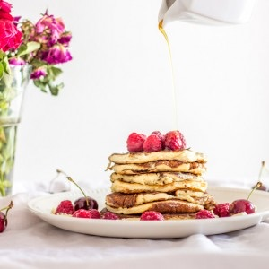

Pancakes ricotta

Aujourd’hui je vous retrouve avec une recette parfaite pour un brunch du dimanche matin ! Vous avez du voir passer ces délicieux pancakes sur mon instagram il y a peu et aujourd’hui me voilà avec la recette !
Je pense que nous sommes nombreux à apprécier bruncher le dimanche matin et tout particulièrement en été (enfin pour nous quoi que en hiver aussi c’est vraiment pas mal^^) et surtout quand il fait un grand soleil comme celui de ces derniers jours. Avant de partir en congés, il fallait que j’utilise le pot de ricotta qu’il me restait dans le frigo alors j’ai décidé de faire des pancakes ricotta à l’occasion de notre brunch du dimanche avant notre départ. Je dirais que ces pancakes mettent un peu plus de temps à cuire que des pancakes classiques mais ils ont la particularité d’être très légers et ils sont absolument délicieux et ultra moelleux ! Pour ceux qui se demandent si on sent la ricotta dans les pancakes la réponse est non absolument pas!
A l’heure ou vous me lisez je suis quelque part en Turquie entrain de profiter des mes quelques jours de congés mais je tenais absolument à publier une petite recette que j’apprécie tout particulièrement pendant mon séjour alors je dis merci à la planification d’articles. J’espère d’ailleurs vous ramenez pleins de recettes dans mes bagages et en attendant je vous laisse avec la recette des pancakes ricotta que j’ai cette fois là arrosé généreusement de sirop d’érable, de framboises, bananes et de quelques cerises!
Ingrédients
- Ricotta - 250g
- Lait - 125ml
- Oeufs - 2
- Farine - 100g
- Levure chimique - 1 càc
- Banane - 1 mûre
- Miel - 2 càs
- Huile de cuisson
Instructions
- Séparer les blancs des jaunes d’œufs
- Dans le bol de votre mixeur, verser la ricotta, les jaunes d’œufs, la banane écrasée, le miel et le lait
- Mixer le mélange jusqu'à obtenir un mélange homogène
- Ajouter la farine et la levure
- Mixer à nouveau
- Monter les blancs en neige
- Mélanger les blancs au mélange ricotta/jaunes/banane délicatement
- Verser un peu d'huile dans une poêle chaude
- Verser un peu de pâte à pancakes dans la poêle et faites les cuire pendant 1 petite minute jusqu'à ce qu'ils soient bien dorés
- Servir avec des fruits, un peu de sirop d'érable pour un petit déjeuner c'est juste parfait!
Les tips de la communauté
Enthousiasme unanime pour ces pancakes. La texture extrêmement moelleuse et légère plaît beaucoup. L'ajout de ricotta est apprécié, bien que la cuisson demande un peu de pratique.
Astuces
- Utiliser de la farine classique pour les meilleurs résultats
- La pâte est pénible à la cuisson car elle se défait facilement - attendre 1 à 2 tentatives pour maîtriser
- Ajouter des fruits dans la pâte pour plus de gourmandise
Variantes suggérées
- Pancakes nature sans fruits pour une version classique
- Pancakes aux fruits (fruits dans la pâte ou en garnit